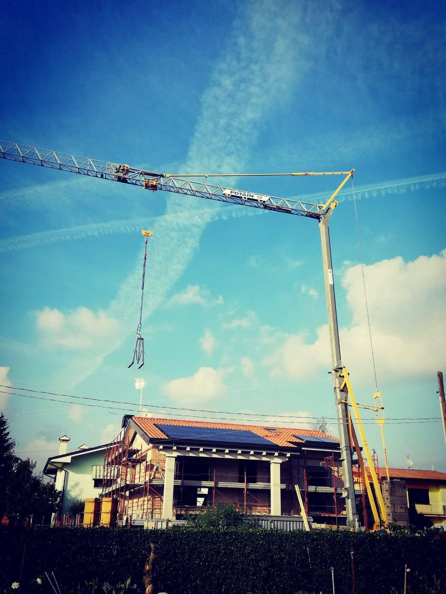
Impresa edile del geom. Andrea Girardi
Case nuove e restauri, a Treviso.
Nuove costruzioni, ristrutturazioni e movimento terra. Con il titolare in cantiere.
- TitolareGeom. Andrea Girardi
- ImpresaDal 2019, Treviso
- Google4,4 · 7 recensioni
- SedeStrada del Mozzato 1
Lavori
Tre mestieri, una sola impresa.
Dallo scavo al tetto, oppure dentro una casa che c'è già. Il cantiere lo segue chi ha fatto il preventivo.
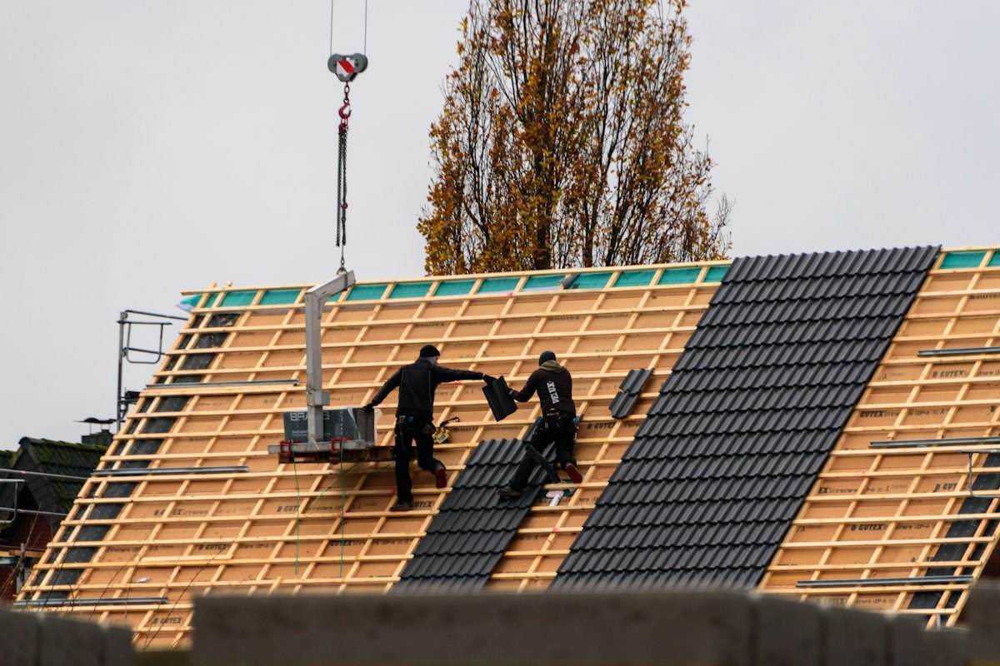
Case singole e bifamiliari, dalle fondazioni alla copertura: struttura, murature, tetto, finiture. Gru e mezzi propri in cantiere.
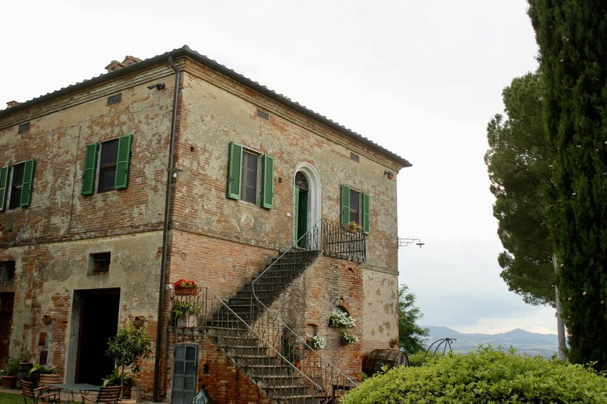
Case da rimettere in piedi: tetti, intonaci, facciate, interni. Anche i vecchi rustici di campagna, conservando quello che vale la pena tenere.
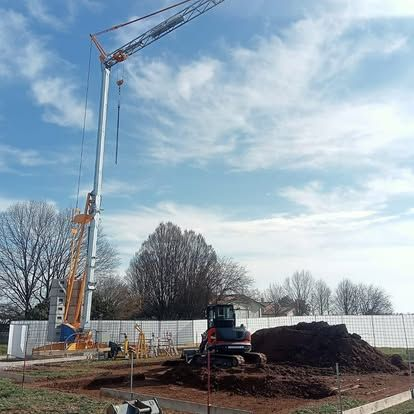
Scavi, sbancamenti e preparazione del lotto prima delle fondazioni, con l'escavatore dell'impresa.
Dal progetto alla casa
Prima il disegno. Poi la casa.
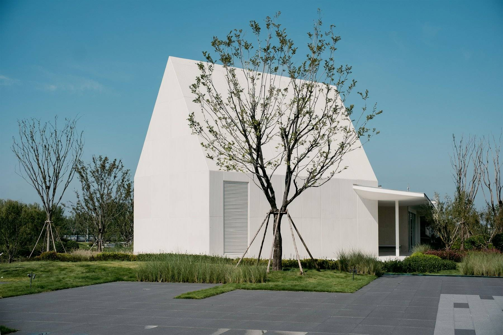
Foto illustrativa. Le case vere dell'impresa sono qui sotto.
Dal cantiere
Foto vere, dai lavori di Girardi.
Dalla pagina Facebook dell'impresa. Scorrete di lato.
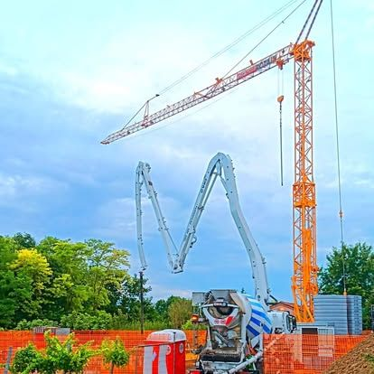
Getto con gru e pompa 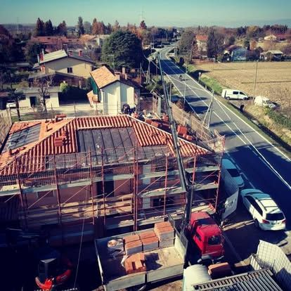
Tetto e ponteggio 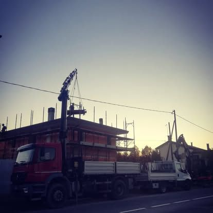
Mezzi dell'impresa 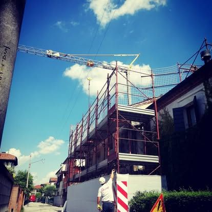
Struttura in elevazione 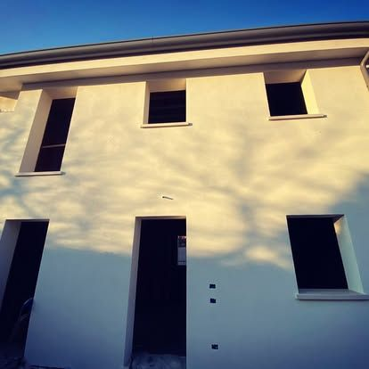
Intonaco finito 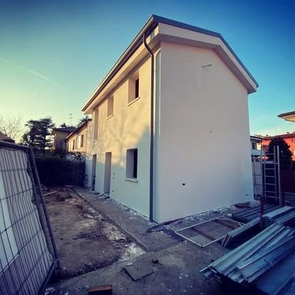
Casa quasi pronta 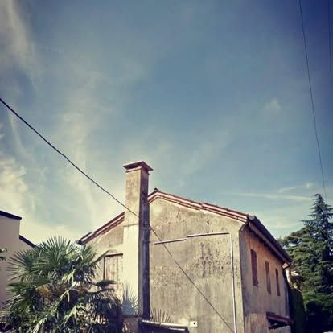
Un rustico, prima 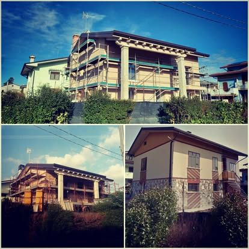
Ristrutturazione
L'impresa
Un geometra, il suo cantiere.
Girardi Costruzioni e Restauri è l'impresa del geometra Andrea Girardi, nata a Treviso nel 2019. Nuove costruzioni, ristrutturazioni e movimento terra, con i mezzi propri: gru, escavatore, camion con gru.
Il preventivo lo fa Andrea, e Andrea è in cantiere fino alla consegna delle chiavi.
“Ha rispettato al centesimo il preventivo iniziale.”
Una recensione su Google, casa nuova
“Casa finita nei tempi previsti e rispetto assoluto del preventivo concordato.”
Una recensione su Google
“Andrea ha seguito il restauro di casa mia.”
Una recensione su Google, restauro
Come si lavora
Dal sopralluogo alle chiavi.
- 01
Sopralluogo
Andrea viene a vedere il lotto o la casa e ascolta cosa volete fare.
- 02
Preventivo scritto
Lavori, materiali e tempi, voce per voce. Si parte solo quando è chiaro.
- 03
Cantiere
Scavo, struttura, tetto e finiture con i mezzi dell'impresa.
- 04
Consegna
La casa finita, nei tempi concordati.
Contatti
Parliamo del vostro lavoro.
- Telefono340 885 0141
- WhatsAppScrivi ad Andrea
- Emailgeom.girardiandrea@libero.it
- SedeStrada del Mozzato 1, 31100 Treviso
Strada del Mozzato 1
31100 Treviso